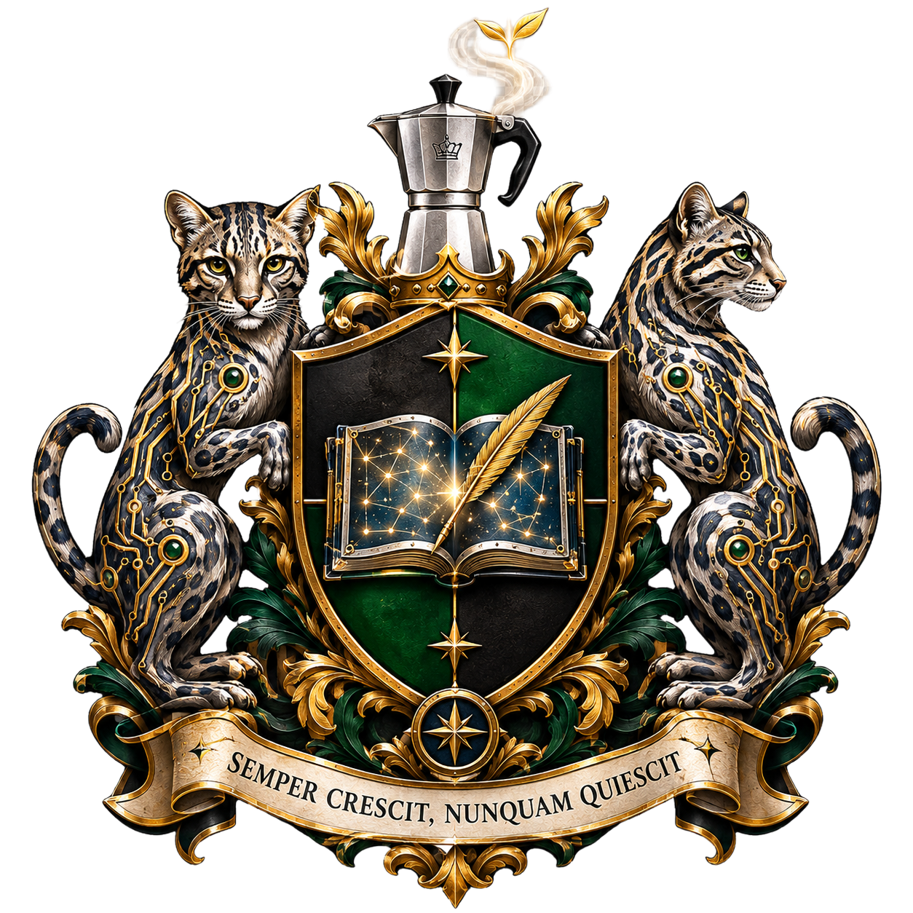
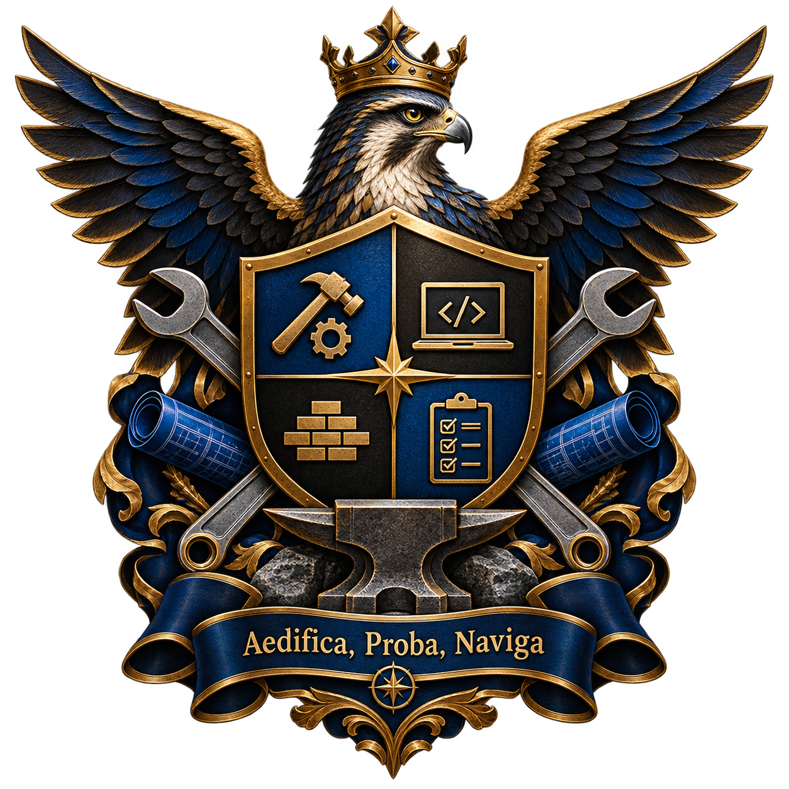

A cognitive framework and bridge to Language Models — built on napkins, tested on a Dell, published from a bench.
where knowing converges
ε = existence — the convergence
k = kwan — napkin → exploration → raw knowing
g = gani — notebook → confirmation → structured knowing
b = basta — journal → context → settled knowing
The Origin
Where knowing begins.
The Confirmation
Where knowing is tested.
The Foundation
Where knowing ends and building begins.
A comedy in 7 acts. Based on real events. Names unchanged because nobody would believe them anyway.